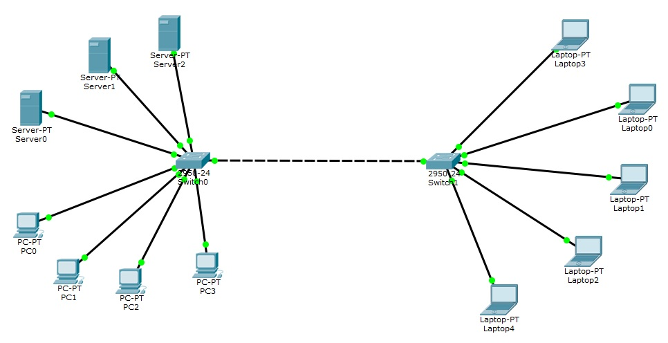
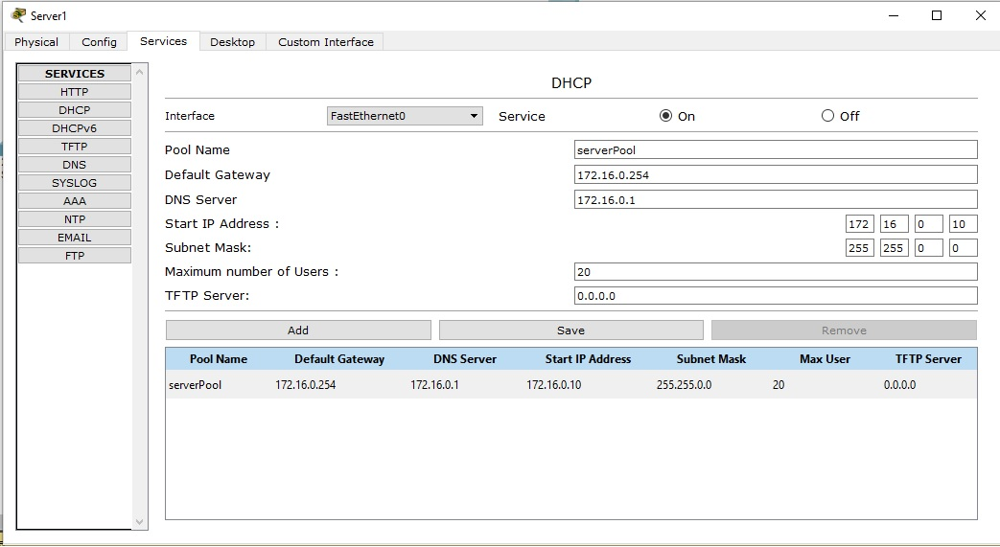
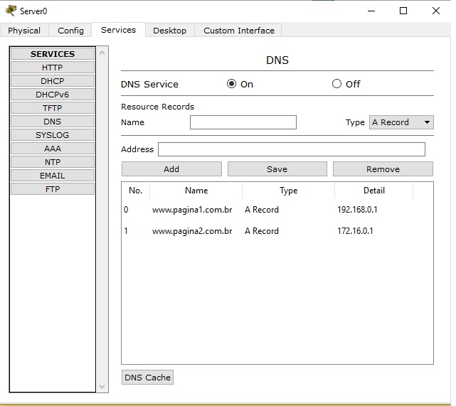

Cisco Packet Tracer
É um software de simulação desenvolvido pela Cisco Systems, utilizado para o ensino e aprendizado de redes de computadores. Ele permite que os usuários criem, configurem e simulem redes de forma virtual, sem a necessidade de hardware físico.
A ferramenta é amplamente utilizada por estudantes e profissionais de redes, especialmente aqueles que estão se preparando para certificações da Cisco, como o CCNA (Cisco Certified Network Associate).
Componentes
- Servidores:Os servidores são utilizados para armazenar e gerenciar dados, executar aplicações e oferecer serviços para os computadores e laptops na rede. Eles podem desempenhar funções como hospedagem de sites, gerenciamento de banco de dados, serviços de arquivos, e execução de aplicações empresariais.
- Switch: O switch é um dispositivo central que conecta diferentes dispositivos na rede (como PCs e laptops) para facilitar a comunicação entre eles. Ele é responsável por receber, processar e encaminhar dados para os dispositivos corretos, garantindo uma troca de informações eficiente na rede.
- Computadores: Os PCs são dispositivos finais utilizados por usuários para acessar aplicações, realizar tarefas do dia a dia e interagir com os servidores para obter dados ou serviços.
Rede Base
DNS
Sistema de Nomes de Domínio é um sistema fundamental da internet que traduz nomes de domínio legíveis em endereços IP, que são utilizados pelos computadores para se comunicarem.
O sistema é estruturado de forma hierárquica, envolvendo várias camadas, como domínios de nível superior e subdomínios.
DHCP
Protocolo de Configuração Dinâmica de Host é um protocolo de rede utilizado para atribuir automaticamente endereços IP e outras configurações de rede a dispositivos que se conectam a uma rede.
Quando um dispositivo, como um computador ou smartphone, se conecta a uma rede que utiliza DHCP, ele envia uma solicitação ao servidor DHCP, que responde com um endereço IP disponível e informações adicionais, como a máscara de sub-rede, gateway padrão e servidores DNS.
Essa automação simplifica o processo de configuração de rede, evitando a necessidade de definir manualmente endereços IP para cada dispositivo.
HTTP
Protocolo de Transferência de Hipertexto é um protocolo de comunicação utilizado na transferência de dados na web. Ele define como as mensagens são formatadas e transmitidas entre clientes e servidores
Quando você digita uma URL no navegador e pressiona Enter, o navegador envia uma solicitação HTTP ao servidor, que responde com o conteúdo desejado, como uma página HTML, imagens ou outros recursos.
Config. DHCP
Config. DNS
